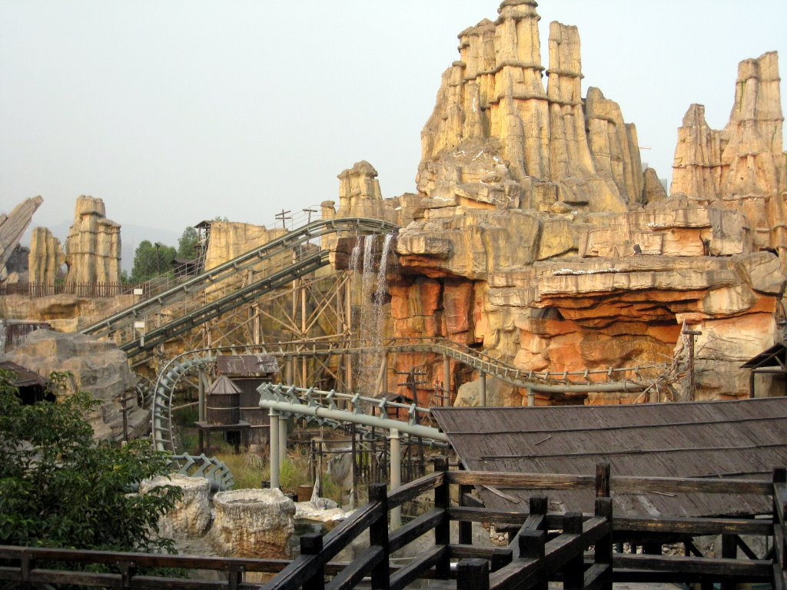
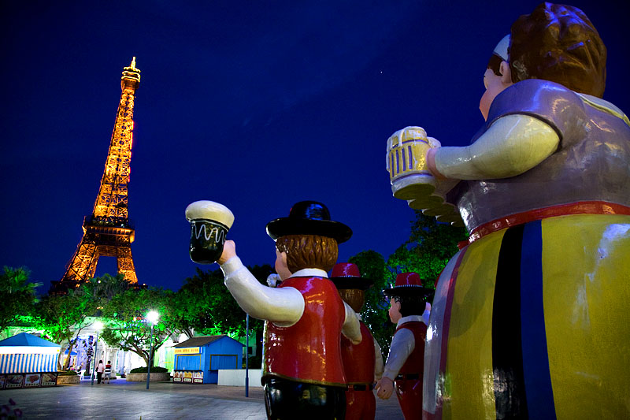
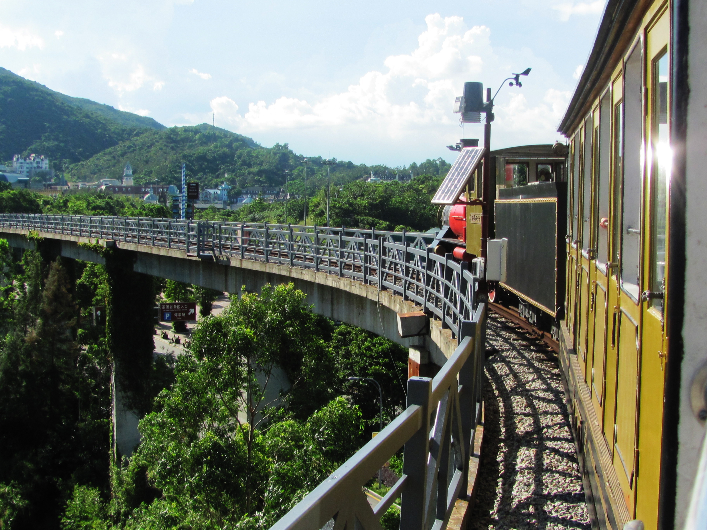

Navagation Links
Home
History
Attractions
Music
Credits
Places to Visit and Things to Do in Shenzhen
Some of the ultimate places to visit in Shenzhen vary from the amazing variety of restaurants and small family owned and government run shops and stands.
Here is a short list:
Happy Valley Theme/Amusement Park

Eric Mueller's - Happy Valley Photo
(CC-nc)
Windows of the World

Szymon Kochanski - Window of the World - Shenzhen, China
(CC-nc-nd)
OCT East - Swiss Theme Park

Food to taste in Shenzhen
Little Sheep - The Best hotpot in Shenzhen
Gypsy's - The Perfect 4 star mix Western food avaliable in Shekou area perfect for when you are missing home but don't want extremely fast food.
McCawley's Irish Pub - Exactly what you need after another
100+F
temperature day